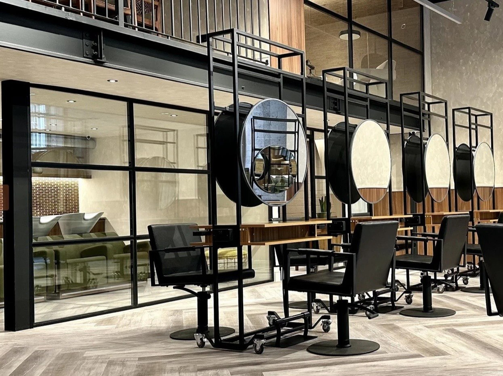
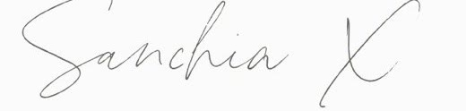
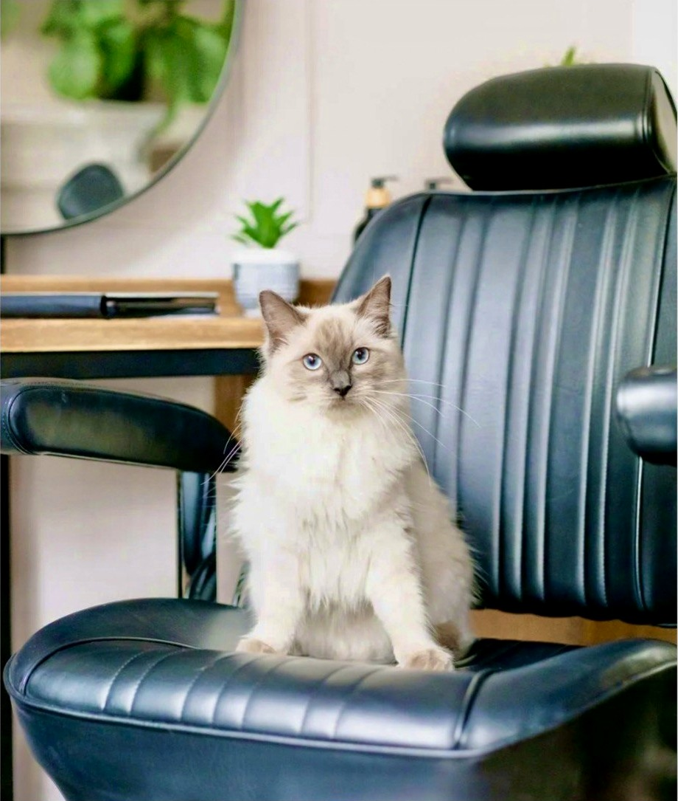

Start Here
For new guests, unsure bookings, bigger changes, colour safety, skin sensitivity testing, strand testing and choosing the right appointment route.
Before-work appointments
Start your day with calm, private-feeling hair care near Bank and Liverpool Street — without losing your evening or weekend.
Stā Studios · quiet City appointments near Bank

About Sanchia
With more than thirty years in the industry, Sanchia understands how hair changes, how it behaves and how personal the right colour, cut or treatment can feel.
Her approach is calm, one-to-one and completely tailored. She takes time to understand your hair history, scalp comfort, condition, lifestyle, routine and long-term goals before choosing the right route — whether that is colour, highlights, balayage, modern perming, curl work, QiQi smoothing, cutting or a Head Spa treatment.
“Conscious hair is not about compromise — it is about choosing beauty with care.”
Every plan is created with the health and integrity of your hair in mind, so your result feels beautiful on the day and continues to support your hair over time.
The aim is to create a signature look that feels healthy, personal and uniquely yours — not a one-off appointment, but a considered hair journey shaped around you.
Your bespoke hair journey begins here.

Choose the route that feels closest to what you need, then explore the services inside it.
For new guests, unsure bookings, bigger changes, colour safety, skin sensitivity testing, strand testing and choosing the right appointment route.
Bespoke colour planned around your haircut, hair history, skin testing, maintenance, condition and long-term result.
Cutting, curl work and texture-control services designed around how your hair naturally sits, moves and behaves day to day.
Treatment-led routes for scalp comfort, softness, condition and a more restorative salon experience.
Colour safety
If you are coming to me for colour, balayage, highlights or grey blending, I want the journey to feel calm, clear and reassuring — never rushed.
Before we book your colour appointment, I may ask you for recent photos, your hair history and a little homework: inspiration images you love, and examples of colours or finishes you know you do not want.
If a consultation is needed, this can be in person or by FaceTime where suitable. This helps me understand your taste, your hair and what feels realistic before I recommend the right colour plan, including any skin sensitivity test or strand test where needed.
“The right colour choice is not just about shade — it is about condition, commitment and how you want your hair to live.”
Organic Colour Systems is my main colour house and my first choice for most colour work. I use it because it sits closely with the way I like to work: with hair health, ingredient transparency, vegan-friendly and cruelty-free choices, botanical ingredients where possible and more responsible salon practice in mind.
I like that it allows me to think about the condition of your hair as well as the colour result — whether we are softening grey, refreshing tone, creating shine, building dimension or planning a bigger change.
For certain colour jobs, I may use yuv® as a secondary professional colour option if I feel it is better suited to your hair, colour history or desired result. Both colour ranges have been chosen because they support vegan-friendly, cruelty-free values and a more considered approach to sustainability. The colour plan is always chosen during consultation, so it feels bespoke, honest and led by your hair.
This checks how your skin responds to the colour product before a colour appointment. If it is needed, you can pop into the salon for a complimentary skin sensitivity test, or request a posted test if visiting is not practical. A small fee is required for postage, packaging and admin.
For a posted test, I will ask you to send a photo when you apply it, then another update or photo after 48 hours to confirm there has been no reaction.
For bigger colour work, I may take or cut a very small strand of your hair and test it first. This helps me see the result, understand the health and condition of your hair, give you a better quote and manage expectations before we commit to a bigger plan.
I will then share the results with you, so we both know what your hair is able to do. If I feel a strand test is needed, you can pop into the salon for this complimentary test before your colour plan is confirmed.
I like you to understand what I am using and why. Selected products may include conditioning colour bases, bespoke shade options, protective lightening support and plant-derived conditioning ingredients such as guar gum, chosen to support shine, softness, manageability and moisture.
If skin-test requirements are not completed in time, your colour appointment may need to be rescheduled so the service can stay safe and properly planned.
Natural curls / modern textured perming
This page helps you choose whether your hair needs support for its natural texture, or new movement created through modern perming.
Work with the curl, wave or movement your hair already has — so it feels softer, easier and more supported.
Read moreFor hair that wants soft movement, natural-looking texture, root lift or a more lived-in curl effect — created through considered modern perming techniques.
Read moreA longer appointment than a standard cut and blow dry, shaped around each curl pattern and how your hair naturally falls.
The appointment begins with a personalised consultation, assessing your curl pattern, natural growth pattern, hair history, density, condition, lifestyle and how you prefer to style your hair at home.
Sanchia works with the hair in its natural form so the cut respects movement, balance and individuality. After cleansing and treating the hair to support condition, curls are styled and refined again with freehand detailing where needed.
If this is your first curl, perming or rejuvenating treatment journey, Sanchia guides you through how to look after it at home.
Where suitable, you may leave with the correct recommended products, a clear do’s-and-don’ts card and simple guidance on how to care for your new curl or wave experience.
If you need help afterwards, support can be given by WhatsApp, a short call or a quick video where appropriate, so you feel confident styling and maintaining the result at home.
“Natural curls should feel supported, not controlled — the right treatment helps them remember how to move.”
“A modern perm should look like your hair learned a softer new movement — not like it was forced into one.”
QiQi can be used where suitable to reduce frizz, support shine, make natural curls easier to wash and dry, rejuvenate straighter ends, or soften a tight natural curl into more of a wave without removing your natural identity.
Organic Colour Systems Think Curl can be used where suitable, with plant amino acids, curl activator, neutraliser, Micro Mist support and Keep Curl aftercare chosen to support definition, curl retention, softness and shine. After the perm, you receive a curl treatment with the Micro Mist machine to help support the hair so the finished result feels softer, healthier and more natural.
Spot perming is for guests who already have curly or wavy hair but have lost curl in certain sections through hormones, illness, pregnancy, damage or natural changes. Sanchia perms only the individual areas needed, aiming to match them back into your existing curl pattern.
Where suitable, Sanchia may recommend strand testing, a hidden test curl or a staged plan so you can understand what your hair is able to do before committing to a fuller texture service.
QiQi Hair Controller
QiQi Hair Controller has replaced older smoothing services within Sanchia Hair’s menu because it offers newer, more flexible hair-control technology that can be personalised around the hair in front of her.
The goal is not to remove your hair’s personality. It is to create hair that feels healthier, more manageable and easier to wear every day — using a more modern approach chosen with hair condition in mind.
Not every guest wants the same result. Some want smoother curls, some want softer waves, some want reduced frizz, less bulk, easier styling, more shine or a sleeker finish. QiQi allows Sanchia to customise the treatment around your natural movement, hair history, lifestyle and desired result.
With the correct homecare, results can typically last around four to six months, depending on your hair type, condition, lifestyle, aftercare and how often you wash or heat-style your hair.
Another benefit is flexibility after the appointment. For suitable guests, hair can usually be washed, exercised with, tied up or styled on the same day, so there is no long waiting period before returning to your normal routine.
Reduced frizz, softer texture, improved manageability, enhanced shine, smoother styling, reduced bulk and more predictable results day to day.
Every QiQi treatment begins with consultation, assessing condition, texture, history, styling routine and long-term goals before choosing the right approach.
The longevity and performance of the treatment depends on how the hair is cared for between appointments. Sanchia will recommend suitable professional homecare for your result.
Head Spa & Micro Mist Treatments
There are two different treatment routes on this page: the full Japanese or Korean Head Spa experience, and the shorter Micro Mist treatment menu. Both support scalp and hair health, but they are booked differently and include different levels of service.
Japanese and Korean Head Spa appointments are the complete rituals, with more time, more treatment layers and a deeper scalp-and-hair experience. Micro Mist treatments are shorter, focused treatment boosts at the backwash in the main salon. They can be booked on their own or added to selected services where suitable, but they are not the same as a full Head Spa appointment.
Korean Head Spa video
Video space for the Korean Head Spa treatment: scalp analysis, cleansing, detoxifying scalp therapies, targeted treatment application, red light, Micro Mist, massage and the finished refreshed result.
Japanese Head Spa video
Video space for the Japanese Head Spa treatment: water therapy, aromatherapy, massage, calm sensory details, Micro Mist support, relaxation and the finished softness and shine.
Micro Mist treatment menu
A Micro Mist Treatment is a personalised treatment service that can be added to selected appointments, including cutting, colour and perming services, or booked as a shorter treatment where suitable.
Your experience begins with a hair and scalp analysis. Where appropriate, Sanchia may perform a wet hair test to help choose the most suitable treatment for your hair and scalp needs on the day.
Japanese & Korean Hair Spa
Japanese and Korean Hair Spa treatments combine specialist techniques, advanced technology and personalised hair and scalp care to create a more luxurious, in-depth treatment experience.
These appointments are performed in the private studio and focus on scalp health, hair condition, relaxation and overall wellbeing. You can add a Blow Dry or Haircut & Blow-Dry if you would like to leave with your hair styled.
A thoughtful gift
Japanese and Korean Head Spa experiences make a beautiful gift for someone who would value calm, one-to-one care and time to truly switch off.
Gift cards are available as either an electronic gift card or a printed paper gift card. The chosen value can be used towards a Head Spa experience, treatment, styling finish, professional homecare, or a considered combination within the gifted amount.
Treatment-led product choices
This page can hold two separate product stories: one for the full Japanese/Korean Head Spa rituals, and one for the shorter Micro Mist treatment menu. The wording should explain the products, treatment purpose and homecare without making the two bookings sound the same.
Brand spaces: [Head Spa treatment brands] • [Micro Mist treatment sprays/masks] • [Homecare brand]
Private Studio Appointments
For guests who would like a quieter, more personal experience, Private Studio Appointments are available by request. The aim is always to help you feel comfortable, understood and completely at ease throughout your visit.
Some guests enjoy the gentle energy of the salon, while others feel more comfortable in a calm one-to-one space where they can fully relax, speak openly and enjoy their appointment with added privacy.
A Private Studio Appointment may be helpful if you prefer a more discreet experience, have cultural or personal privacy needs, experience anxiety or sensory sensitivity, are experiencing hair loss or scalp concerns, are on a medical hair journey, or simply want uninterrupted time to focus on your hair and wellbeing.
Private Studio access is included with selected signature Japanese Head Spa and Korean Head Spa experiences, where the appointment is designed as a complete scalp, hair and wellbeing ritual.
All Sanchia Hair services can be requested as a Private Studio Appointment, subject to availability. This may include colour, grey blending, cutting, styling, natural curls, modern perming, QiQi, smoothing and hair or scalp treatments.
Where suitable and agreed in advance, the Private Studio can offer a calmer, more private space if you need to bring a baby or child with you. Please mention this when booking so Sanchia can confirm whether the appointment and service are suitable.
Visit / Book
Based within Stā Studios, 14–17 Old Broad Street, London EC2N 1DW. A clear map, arrival details and WhatsApp route help guests feel confident before booking.
For new guest enquiries, please contact Sanchia by WhatsApp rather than phone. This allows Sanchia to review your hair goals, photos and history properly, then guide you towards the right appointment, an in-person consultation, a FaceTime consultation, or a skin-test option.
In-person consultation — £35. Best for new guests, colour changes, curls, smoothing, texture work or anyone who needs skin testing or strand testing where suitable. FaceTime consultations can also be offered where an initial conversation is helpful before deciding the next step.
Refreshments: To make your visit feel calm from the moment you arrive, you can view the Stā Studios drinks menu in advance and WhatsApp your choice when confirming your appointment, deposit and any product pre-order. Your drink is included as part of the Sanchia Hair experience, not added as a separate charge.

Client Care
This page protects Sanchia’s time and makes guests feel guided, not told off. New enquiries should come through WhatsApp first so hair photos, history and goals are kept organised — not lost in email.
Your Hair Journey Record
Once your consultation and plan have been agreed, Sanchia can take a before photo and an after photo so you both have a clear record of your hair journey.
These reference images are shared with you after the appointment and kept alongside detailed colour notes, treatment notes and future plans. This makes each next visit more considered, because any changes, tweaks or improvements can be guided by real photos and a clear history of what has been done.
Gifts & Homecare
A Sanchia Hair gift card is a thoughtful way to give time, care and a luxury hair experience — while allowing the person receiving it to choose what feels right for them.
The gift card can be created to the value the giver would like to spend. That value can then be used towards a hair service, styling care, a treatment ritual, professional homecare, or a considered mix of both.
For example, the recipient may choose to use part of the value towards an appointment and part towards take-home care products chosen to suit their hair needs, within the amount gifted.
Gift cards are presented as a printed card in a small black envelope. They can be collected from the salon, or posted directly for an additional postage fee.
To keep the gift discreet and elegant, the value is not written on the card. Each gift card can include a private scannable code so Sanchia can check the value when it is redeemed, without the recipient seeing the amount spent.
Gift cards are valid for 12 months from the date of purchase. They are non-refundable, cannot be exchanged for cash and any unused balance expires after the valid-until date.
They are especially lovely for someone who would value calm one-to-one time, a treatment ritual, a confidence refresh or a before-work 7am City appointment that fits around a busy life.
Google Reviews and social links can sit in the footer, Visit page and printed QR cards without cluttering the main website.
Digital gift card
A refined digital gift card can be downloaded, printed or sent electronically once the value and message have been confirmed with Sanchia.
Download digital gift cardGiving Back / Cruelty-Free
Sanchia Hair is built around considered choices: beautiful hair, thoughtful service, responsible products and a client journey that feels personal rather than disposable.
Sanchia’s connection with animals is personal too. Meet Miss Evie — her four-legged fluffy child, trained Ragdoll cat and little animal actor. Evie changed Sanchia’s life in a very gentle way, and that love is part of why cruelty-free choices, thoughtful product selection and responsible brand values matter so much.
A sweet extra note for animal lovers: Stā Studios is dog-friendly, so well-behaved dogs are welcome in the building where suitable. Please let Sanchia know before your appointment if you plan to bring your dog, so the visit can be kept calm and comfortable for everyone.
Product partners are chosen with the same care. Organic Colour Systems is the main colour and care range at Sanchia Hair — the professional system Sanchia reaches for first because it supports her values around hair health, ingredient transparency, vegan-friendly choices and responsible salon practice.
Where a particular colour job needs a different professional route, Sanchia may use yuv® as a secondary colour option. It is kept simple here: used only where suitable for a specific result, and chosen because it is vegan-friendly and not tested on animals.
This section should feel transparent without becoming too technical: Organic Colour Systems remains the main story, with supporting notes for responsible salon choices, Green Salon Collective, Miss Evie, community work and carefully chosen print materials.
Organic Colour Systems is Sanchia’s main colour and care system, chosen for beautiful professional results, hair-health thinking, ingredient transparency and values that sit close to her own. When a specific colour job needs a different route, yuv® may be used as a secondary professional colour option; it is vegan-friendly and not tested on animals.
The aim is to be open about the products used without overwhelming guests. Key ingredients, treatment benefits and aftercare can be explained in a calm, useful way so guests understand why a product has been chosen for their hair.
Space to mention Green Salon Collective, recycling, waste reduction, carefully chosen homecare and practical salon choices that support a more thoughtful hair experience.
Miss Evie, animal welfare values, HALAS Clinic, charity/community work and responsible print choices can sit here gently — written with warmth, not as a performative statement.
Gallery
The gallery is now arranged as clickable service and colour-story boxes, so guests can quickly choose the results they want to see. Ten strong images per category is a good launch amount: enough proof to build trust without making the page feel overwhelming.
Overall colour stories, gloss, tonal changes and condition-led transformations.
10 photos 02Babylights, face-framing brightness, soft dimension and natural-looking lightness.
10 photos 03Lived-in brightness, soft grow-out and bespoke placement without using ombré wording.
10 photos 04Blending grey away, working with silver and softening regrowth lines.
10 photos 05Curl cutting, curl revival, definition, softness and textured finishes.
10 photos 06Beach waves, root volume, spot perming and natural-looking movement.
10 photos 07Rich brunette, chocolate, espresso, soft depth and glossy dimension.
10 photos 08Soft copper, auburn, red tones and warm bespoke colour stories.
10 photos 09Creamy blondes, soft brightness, tonal refinement and healthy-looking shine.
10 photosGoogle Reviews
Client reviews can have their own page, but short quotes can also appear between service sections, on social posts and beside treatment photographs. This gives proof without making the website feel noisy.
Helpful links
These links keep the client journey simple: booking through Solo, reviews in one place, and social channels for hair journeys, aftercare and updates.
Consultations and appointments.
ReviewGoogle ReviewsAdd exact Google review link.
ReviewSolo ReviewsAdd exact Solo review link.
AdsGoogle Ads / trackingAdd campaign, tag or landing-page link.
RecommendRecommend a friendIf a new guest books a qualifying first appointment and mentions your name, you can receive a complimentary treatment gift at your next visit. Treatment choice and suitability are confirmed by Sanchia; not exchangeable for cash or a discount.
SocialInstagramAdd exact profile URL.
SocialFacebookAdd exact page URL.
SocialTikTokAdd exact profile URL.
SocialLinkedInAdd exact profile or page URL.
{kind=link}